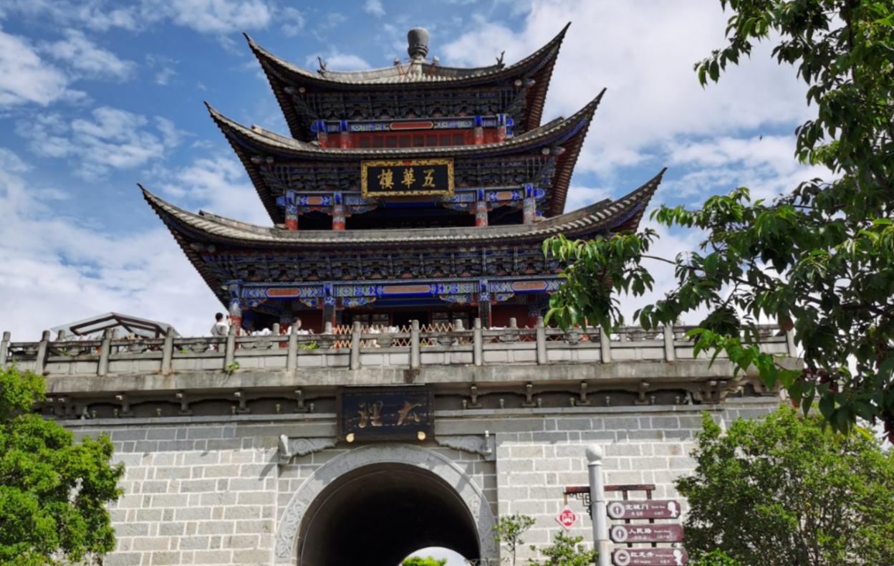
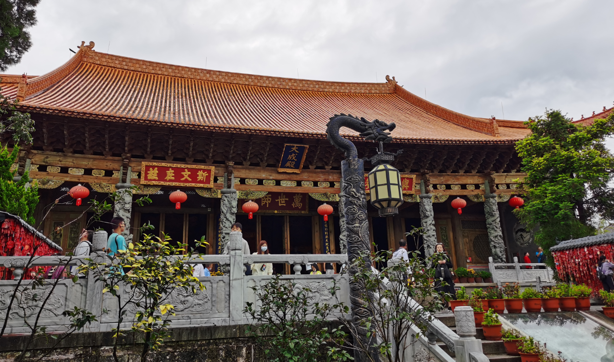
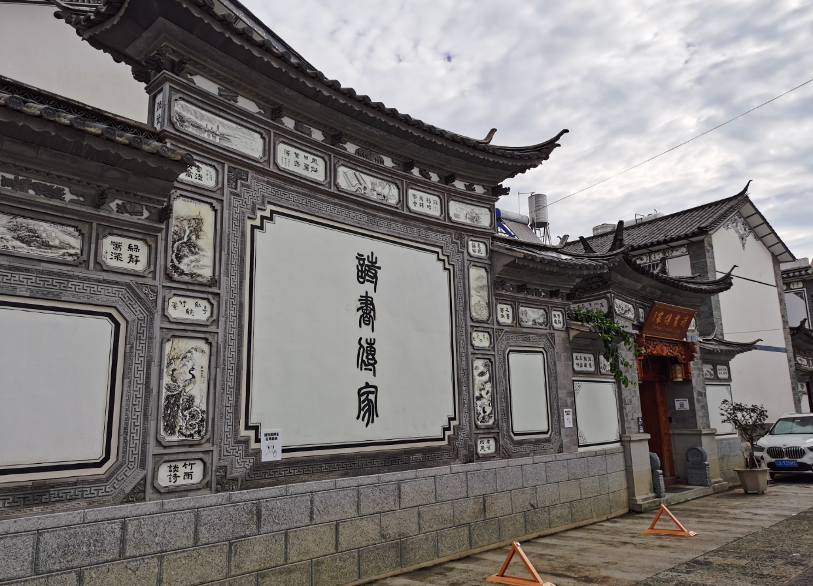
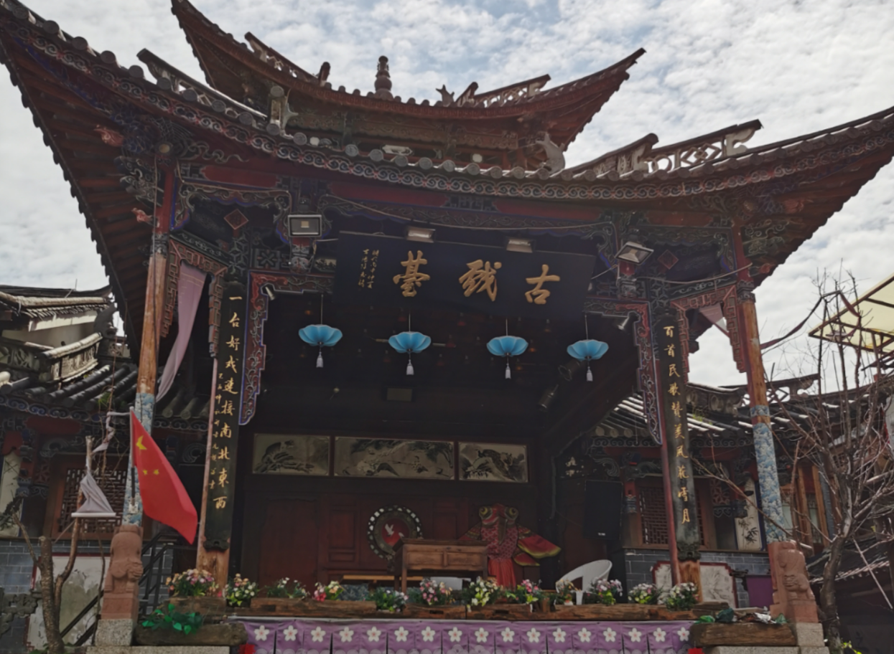
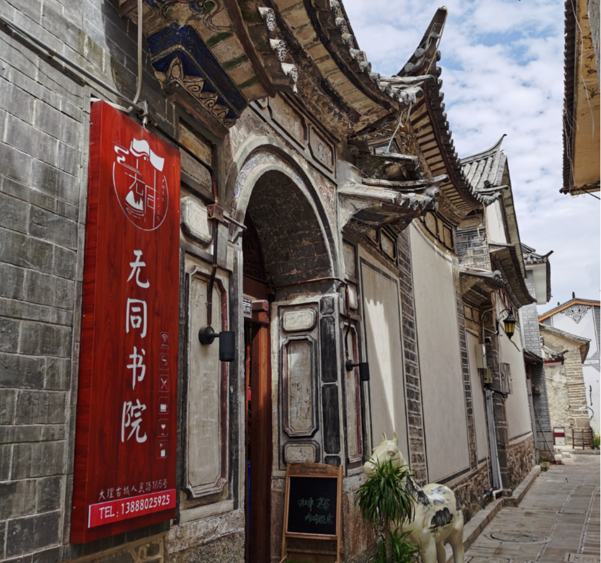

文脉悠悠润古城
苍山洱海，风花雪月，大理的美好风光与宜人气候令我流连；“文献名邦”“文青的天堂”，大理古城浓郁的人文气息令人沉醉。
大理，是中国唯一的白族自治州，是云南历史文化的发祥地之一。这里文物古迹众多、文化艺术丰厚，曾是唐朝古书中风情万种的南诏国，也是金庸笔下儿女情长的大理国，茶马古道从这里经过，汉、藏、彝、白、纳西、傣等民族文化在这里交汇，其历史、宗教、文化、艺术呈现出多元、开放、宽和、兼容的特征，有“亚洲文化十字路口的古都”之称。
大理古城，地处苍山之麓、洱海之畔，始建于明洪武十五年（1382年），是全国首批历史文化名城之一。历经沧桑、多次重建的古城，为典型的棋盘式布局，洱海、双鹤、苍山、三塔四座城门分别位于东南西北四个方向。我们住在东城门旁，拾级登临，便可俯瞰碧波万顷的洱海，深感“洱海门”名副其实。但古城的正门却在南城门，即大理古城的地标建筑——“双鹤门”。“双鹤”之名源自“双鹤拓疆”的诗意传说，据传白族的祖先是循着双鹤的足迹来到这块风水宝地的。斗拱飞檐、雕梁画栋的双鹤门始建于明朝洪武年间，城门上的“大理”二字爽劲洒脱，为郭沫若先生所题。

若把大理古城看做一方印玺，那么城中高耸的五华楼就是这颗印玺的印纽。“五华楼”建于南诏劝丰佑时期（856年），贵宾至此就会钟鼓齐鸣，堪称南诏国的“钓鱼台”。我们随着人流登上“五华楼”，古老的城墙、繁华的街道、鳞次栉比的民居尽收眼底，一副“山水有情楼有致笼五华胜景，诗章犹在墨犹新汇几代风流”的楹联古朴苍劲。而今五华楼一带已成远近闻名的书画市场，真个是“诗章犹在墨犹新”。
贯通“双鹤门”和“五华楼”的街道名“复兴路”。这条街是大理古城的主干道，串联着大街小巷。复兴路文脉深厚绵长，透过灰青色满是包浆的石板路，眼前仿佛掠过刀光剑影的历史画面，耳畔似乎回响着马帮悠远的铃声。

位于复兴路中段的云南提督府旧址，为何却挂着“总统兵马大元帅府”的牌匾？好奇心驱使我去一探究竟，想不到这里还藏着一个悲壮的故事。云南提督衙门为康熙二年所建，迄今已360年。1856年滇西爆发以杜文秀为首的反清起义，起义军攻占提督府，推荐杜文秀为“总统兵马大元帅”，遂改提督府为元帅府。1872年起义失败，为救城中数万百姓免遭屠杀，杜文秀在全家服毒后吞下孔雀胆，穿上大礼服，赴清军大营而死，年仅49岁。1988年，昔日神秘显赫的提督府、元帅府，摇身一变成为民众可以免费参观的大理市历史博物馆。该馆藏品丰富，其中不乏东汉青铜双龙衔柱摇钱树、明舞乐俑等精品文物。馆内的碑林堪称云南之最，大理国至清代的200余通碑刻陈列于此，其中“山花碑”是用汉字记录白语的珍贵碑刻，为明代著名白族文学家杨黼先生所撰，距今已有500多年。我在“山花碑”前伫立良久，对深受华夏文化浸润、潜心传承本民族文化的白族先贤，油然而生敬意。

在垂柳依依、溪流潺潺的复兴路且行且赏，不觉来到大理文庙前。进得庙来，厚重之中竟有焕然一新之感。一打听，方知缘由。明清时期大理市内文庙多达16座，以大理文庙为载体的中国传统文化以其独特的丰厚内涵，对大理社会影响深远。由于历史原因，大理文庙毁损严重，原文庙建筑仅存大成门。
大理人深知大理文庙是“文献名邦”深厚文化内涵的见证和载体，不能任其淹没于“逝者如斯夫”的历史长河中。2016年大理文庙涅槃重生。而今，泮池、棂星门、大成殿、崇圣祠等历史建筑风貌精美重现，一座庄严伟岸的孔子铜雕像屹立在文庙广场中央，“孔子圣迹图”浮雕、《四书五经》《弟子规》等碑刻环列左右，细节处无不彰显出“温故知新”的匠心、“道不远人”的信念，大理人对孔子的景仰、对中华传统文化的尊崇昭然可见。缓行其间，只见几个孩童在长辈的引导下，在孔子像前恭恭敬敬行作揖礼，在《弟子规》前朗声诵读，相信一颗崇德向善的种子已悄然种在孩童心中；本地大爷大妈在文化长廊拉二胡、打太极、唱歌，“卧似一张弓，站似一棵松。东方一条龙，儿女似英雄……”， 铿锵的旋律，回荡着一种穿越古今的力量。

大理古城，最宜漫游。深街幽巷，构成古城的肌理，隐藏着这座滇西名城最丰富的市井生活画卷。每日晨昏，我最喜在曲折幽静的小巷中穿行，迎面繁花如瀑，转角苍山流云，抬头蓝天白云，古城的静谧与美好尽在其中。
白族民居，是中国传统民居建筑大花园中的一朵奇葩，“九街十八巷”“三坊一照壁”“四合五天井”，将大理古城装点得魅力十足。白族民居建筑承袭了中原地区的粉墙黛瓦，但因地域和民族审美情趣差异，呈现出不同的风貌。古城民居门头普遍较小，多采用殿阁式造型，飞檐串角，装饰以木雕、泥塑和彩绘，显得庄重典雅。最令我难忘的是其点睛之笔——“照壁”。 每家的门前，几乎都有一个上绘水墨丹青、下衬花台盆景的照壁，照壁正中，通常竖题四个黑色的大字，有描写大理山水的“苍洱毓秀”“风花雪月”等；有根据方位题书的“紫气东来”，“彩云南现”等。更多的题词则代表着一个姓氏，讲述着一个故事，传承着一种家风。如“清白传家”为杨姓——东汉名臣杨震任东莱太守时，有人送给他十斤金子，他坚决不收，并说：“天知，神知，我知，子知。何谓无知！”杨震是陕西华阴人，可没有想到，两千公里外的大理白族杨姓子孙，都以他的清白为荣；如“青莲遗风”为李姓——李白，字太白，号青莲居士，写下了很多不朽的诗篇，白族的李姓，以此鼓励子孙后代像李白一样，饱读诗书，美名传扬；“琴鹤家声”为赵姓，源自宋代“铁面御史”赵抃为官清廉的史实……古城照壁隐藏的奥秘竟如此之美！

而今，古城民居化身民宿、客栈，吸引着世界各地前往大理彩云追月的人们。游走在古城街巷，那一个个创意满满、格调清新的民宿店招，不时给我以惊喜。有的诗意盎然，如“声声慢·耳朵的院子”“八千里路云和月”；有的富于情趣，如“行走的花儿”“遇见爱”；有的禅意素雅，如 “莫梵”“寂时宿”；还有的幽默俏皮，如“嘿！抬头”“小二上茶﹒奉旨饮茶”；等等。街巷、民宿多楹联：“半庭兰意生诗意，一树梅香伴墨香”“放浪江湖上，咏歌风月中”。店招旁，偶有诗意告白：“我们走得太急，需要慢下来去寻找遗失的美好。”“你应该是一场梦，我应该是一阵风。”古典韵与现代风、书卷气与烟火味在这里杂糅相济、雅俗共赏。
大理古城被誉为“文青的天堂”。据说，大理历史上第一个外来“文青”，是与卓文君“当垆卖酒”的司马相如。为主持修建通往“西南夷”的灵官道，司马相如曾从蜀地一路向南考察，最终抵达大理。大理本地“文青”张叔和盛览，还慕名上门拜师，学习经文，便有了大理“文献名邦”的起源——这是我从“海豚阿德书店”《苍山下》一书中看到的故事。古城那些藏身闹市的书店是我的最爱。在普洱茶和咖啡融合的香气里，寻一角落，与书为伴，浑然不觉夕照余晖已暗淡。夜色阑珊中驻足街头，品尝一口大理特色小吃漾濞卷粉，俯瞰银器匠人精工细敲，聆听洞经古乐的街头演奏，或音乐酒吧传出的《海阔天空》，任时光流淌，好不惬意。
古城四日，流连于这里的风景名胜、街巷院落间，大理人对优秀中华传统文化的珍视弘扬，对本民族文化的坚守传承，对时尚文化的吸纳包容，对家园和生活发自内心的热爱，令人肃然起敬。厚重而清新的文脉，如苍山清溪、洱海碧波，不仅流淌在古城的长街深巷、小店路摊、书页美食间，更滋润着大理人和游客的心灵。游历期间，大理人的淳朴、沉静、诚实和自信，留下了美好的印象。路遇塞车，出租车司机“阿鹏”淡定谈笑；街头问路，环卫“金花”热情指引；书店打听，店员推荐起其他同行来竟如数家珍；暴雨倾盆，早餐店老板竟将雨伞毫不迟疑地借给素不相识的我们……
玉洱银苍，文脉悠悠。爱不够的大理古城。